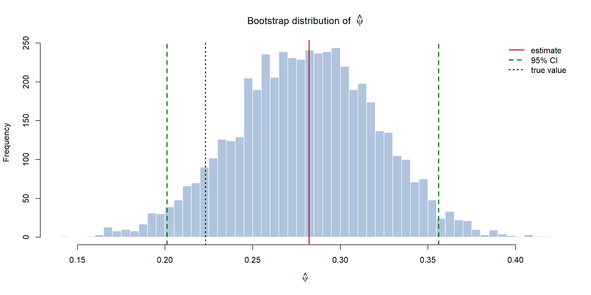
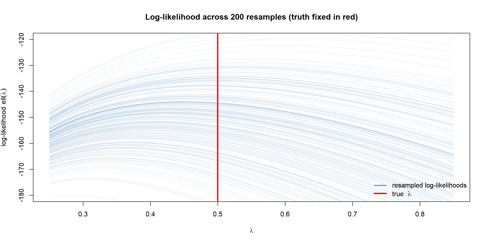

flowchart TD
Q["I have an estimate θ̂.<br/>How do I quantify its uncertainty?"]
Q --> T{"Is the problem tractable?<br/>(closed-form SE,<br/>known sampling distribution)"}
T -->|"Yes"| A["Use the formula<br/>(Wald / likelihood-ratio CI<br/>from the previous page)"]
T -->|"No"| S["Simulate:<br/>Monte Carlo / bootstrap"]
Simulation in R: Tractable and Intractable Problems
The previous page built confidence intervals from clean asymptotic formulas. But those formulas only exist when the model is tractable — when we can write the answer down by hand. This page is about everything else: what to do when the algebra runs out and we must let the computer do the work through simulation.
The guiding idea is simple. The frequentist definition of probability imagines repeating the experiment many times. We can never do that in the real world — but on a computer we can. Simulation makes the imaginary repetitions real.
Tractable vs intractable
A problem is tractable when the answer has a closed form you can compute directly. A problem is intractable when one or more of these breaks down:
- the MLE has no closed form (you can only find it numerically);
- the Fisher information is impossible or messy to differentiate analytically;
- the sampling distribution of the estimator is unknown, so there is no standard-error formula to apply;
- you care about a complicated function of the parameters (a ratio, a quantile, a predicted probability) whose distribution has no clean form.
| Tractable | Intractable | |
|---|---|---|
| MLE | Closed form, e.g. \(\hat\theta = k/n\) | Numerical only |
| Standard error | Formula from \(I(\theta)\) | No formula available |
| Sampling distribution | Known (often normal) | Unknown |
| What to do | Plug into Wald / LR interval | Simulate it |
When the algebra runs out, we stop trying to derive the answer and instead generate it: produce many data sets, re-estimate on each, and read the uncertainty straight off the spread of the estimates.
The two workhorses of simulation
flowchart TD
P["Intractable problem:<br/>no formula for the uncertainty"]
P --> Q{"Do I trust my<br/>parametric model?"}
Q -->|"Yes — model is reliable"| MC["Parametric bootstrap:<br/>generate data FROM<br/>the fitted model"]
Q -->|"Not fully — let the data speak"| BS["Nonparametric bootstrap:<br/>resample the observed data<br/>WITH replacement"]
MC --> R["Recompute the estimate on<br/>each simulated data set →<br/>its spread IS the standard error"]
BS --> R
Parametric bootstrap
If we believe the model, we generate many fake data sets from the fitted model, re-estimate on each, and read off the variability directly. This works even when no standard-error formula exists.
Nonparametric bootstrap
If we do not want to lean on the parametric model, we instead resample the observed data with replacement to form many pseudo-samples. Each resample mimics “drawing a fresh data set,” and re-estimating on each reveals how much the estimate would wobble. This needs almost no theory at all — only the data.
NoteIn a nutshell: why sampling with replacement works
Resampling with replacement (sample(x, replace = TRUE)) pretends our sample is the whole population and draws a brand-new data set from it. Because each draw can repeat earlier values, no two resamples are identical — so they stand in for the fresh data sets we wish we could collect but cannot.
A tractable example (to build intuition)
Before tackling a hard problem, let us confirm that simulation agrees with the formula when a formula exists. We reuse the coin-flip model: the MLE is \(\hat\theta = k/n\) and the closed-form standard error is \(\sqrt{\hat\theta(1-\hat\theta)/n}\).
Code
```{r}
#| warning: false
#| message: false
set.seed(1)
trueTheta <- 0.7
n <- 200
flips <- rbinom(n, size = 1, prob = trueTheta)
k <- sum(flips)
mle <- k / n
seForm <- sqrt(mle * (1 - mle) / n) # closed-form (tractable)
# Nonparametric bootstrap estimate of the same SE
B <- 5000
bootMle <- numeric(B)
for (b in 1:B) {
resample <- sample(flips, size = n, replace = TRUE)
bootMle[b] <- mean(resample)
}
seBoot <- sd(bootMle)
c(seFormula = seForm, seBootstrap = seBoot)
``` seFormula seBootstrap
0.03270321 0.03293529 The two standard errors match closely. This is the reassurance we need: when the formula exists, simulation reproduces it — so when the formula doesn’t exist, we can trust simulation to fill the gap.
An intractable example, solved by simulation
Now a problem with no clean closed-form standard error. Suppose our data are exponential with rate \(\lambda\), and we care not about \(\lambda\) itself but about a derived quantity: the probability that an observation exceeds a threshold \(t\), \[ \psi = P(X > t) = e^{-\lambda t}. \] The MLE of \(\lambda\) is tractable (\(\hat\lambda = 1/\bar{x}\)), but \(\hat\psi = e^{-\hat\lambda t}\) is a nonlinear function of it, and writing down an exact confidence interval for \(\psi\) is awkward. Simulation sidesteps the algebra entirely.
Code
```{r}
#| warning: false
#| message: false
set.seed(42)
# "Unknown" truth and observed data
trueLam <- 0.5
n <- 80
x <- rexp(n, rate = trueLam)
t <- 3 # threshold of interest
# Point estimates (tractable part)
lamHat <- 1 / mean(x)
psiHat <- exp(-lamHat * t) # P(X > t) — intractable SE
psiHat
```[1] 0.2822358Parametric bootstrap (trust the exponential model)
Code
```{r}
B <- 5000
psiPar <- numeric(B)
for (b in 1:B) {
xStar <- rexp(n, rate = lamHat) # new data FROM the fitted model
lamStar <- 1 / mean(xStar)
psiPar[b] <- exp(-lamStar * t)
}
ciPar <- quantile(psiPar, c(0.025, 0.975))
c(estimate = psiHat, se = sd(psiPar), ciPar)
``` estimate se 2.5% 97.5%
0.28223581 0.04005689 0.20111916 0.35618013 Nonparametric bootstrap (let the data speak)
Code
```{r}
psiNp <- numeric(B)
for (b in 1:B) {
xStar <- sample(x, size = n, replace = TRUE) # resample the DATA
lamStar <- 1 / mean(xStar)
psiNp[b] <- exp(-lamStar * t)
}
ciNp <- quantile(psiNp, c(0.025, 0.975))
c(estimate = psiHat, se = sd(psiNp), ciNp)
``` estimate se 2.5% 97.5%
0.28223581 0.05410211 0.17335219 0.38532988 Both bootstraps give us a standard error and a confidence interval for \(\psi\) without ever differentiating anything. The picture below shows the simulated distribution of \(\hat\psi\) — its spread is the uncertainty we could not derive by hand.
Code
```{r}
#| fig-align: center
hist(psiPar, breaks = 40, col = "lightsteelblue", border = "white",
main = expression(paste("Bootstrap distribution of ", hat(psi))),
xlab = expression(hat(psi)))
abline(v = psiHat, col = "firebrick", lwd = 2)
abline(v = ciPar, col = "darkgreen", lwd = 2, lty = 2)
abline(v = exp(-trueLam * t), col = "black", lwd = 2, lty = 3)
legend("topright", bty = "n", lwd = 2, lty = c(1, 2, 3),
col = c("firebrick", "darkgreen", "black"),
legend = c("estimate", "95% CI", "true value"))
```
How the likelihood itself wobbles under resampling
The histogram above summarises the resampling by a single number per resample (\(\hat\psi\)). It is more revealing to watch the whole log-likelihood function move as we resample. Each bootstrap data set produces its own log-likelihood curve in \(\lambda\), peaking at its own MLE — yet the truth is fixed (the red line). This is the frequentist picture made visible: the data is random, the parameter is not.
For the exponential model the log-likelihood is \(\ell(\lambda) = n\log\lambda - \lambda\sum_i x_i\). We overlay this curve for many resampled data sets:
Code
```{r}
#| fig-align: center
grid <- seq(0.25, 0.85, length.out = 400)
# Exponential log-likelihood for a given data vector
llExp <- function(lambda, data) {
length(data) * log(lambda) - lambda * sum(data)
}
# Set up an empty plot
plot(NA, xlim = range(grid), ylim = c(-180, -120),
xlab = expression(lambda),
ylab = expression(paste("log-likelihood ", ell(lambda))),
main = "Log-likelihood across 200 resamples (truth fixed in red)")
# One translucent log-likelihood curve per resample
for (b in 1:200) {
xStar <- sample(x, size = n, replace = TRUE)
lines(grid, llExp(grid, xStar),
col = adjustcolor("steelblue", alpha.f = 0.12))
}
# The fixed truth: a single red vertical line that does NOT move
abline(v = trueLam, col = "red", lwd = 3)
legend("bottomright", bty = "n",
lwd = c(2, 3), col = c("steelblue", "red"),
legend = c("resampled log-likelihoods", expression(paste("true ", lambda))))
```
Notice that the peaks scatter left and right of the red line — each resample’s MLE misses the truth by a little, in a different direction — but they cluster around it. That scatter of peaks is precisely the sampling variability the bootstrap is estimating; the standard error we computed above is just a numerical summary of how far these curves’ maxima typically stray from the fixed truth.
TipGoing further 🚀
Hand-written bootstrap loops are great for understanding, but the boot package does it properly — including the bias-corrected and accelerated (BCa) interval, which corrects the naive percentile interval for skew and bias:
Code
```{r}
#| eval: false
library(boot)
psiFun <- function(data, idx) exp(-(1 / mean(data[idx])) * t)
bt <- boot(x, psiFun, R = 5000)
boot.ci(bt, type = "bca")
```For a single proportion near the boundary (where the Wald interval misbehaves badly, as the coverage study below shows), binom::binom.confint offers the Wilson and Agresti–Coull intervals, which keep their coverage where Wald fails:
Code
```{r}
#| eval: false
library(binom)
binom.confint(x = 3, n = 15, methods = c("wilson", "agresti-coull", "asymptotic"))
```Fitting two parameters at once with optim
So far every model had a single parameter, and the MLE came either from a formula or a one-dimensional search. Most real models have several parameters, and the score equations \(U(\theta) = 0\) become a system of equations with no closed-form solution. This is one of the most common ways a problem turns intractable — and the standard tool for it is R’s general-purpose optimiser, optim.
The recipe is always the same:
- write the negative log-likelihood as a function of a parameter vector;
- hand it to
optim, which searches the parameter space to minimise it (minimising the negative = maximising the likelihood); - ask
optimfor the Hessian — the matrix of second derivatives — which is the observed information, and invert it to get standard errors.
flowchart LR NLL["negative log-likelihood<br/>nll(θ) as a function<br/>of a parameter vector"] --> OPT["optim(par, nll, hessian = TRUE)"] OPT --> MLE["θ̂ (the par element)"] OPT --> H["Hessian = observed information J(θ̂)"] H -->|"solve(H) → variance matrix"| SE["standard errors = √diag"]
Example: fitting a Gamma distribution
The Gamma distribution has two parameters — a shape \(\alpha\) and a rate \(\beta\) — and its MLEs have no closed form: the shape equation involves the digamma function and must be solved numerically. This makes it a perfect two-parameter optim example.
Code
```{r}
#| warning: false
#| message: false
set.seed(123)
# "Unknown" truth and observed data
trueShape <- 2.5
trueRate <- 1.5
n <- 300
x <- rgamma(n, shape = trueShape, rate = trueRate)
# Negative log-likelihood as a function of the parameter VECTOR theta = (shape, rate)
nll <- function(theta) {
shape <- theta[1]
rate <- theta[2]
if (shape <= 0 || rate <= 0) return(1e10) # keep the search in the valid region
-sum(dgamma(x, shape = shape, rate = rate, log = TRUE))
}
# Method-of-moments starting values (a sensible initial guess matters)
m <- mean(x); v <- var(x)
start <- c(shape = m^2 / v, rate = m / v)
fit <- optim(par = start, fn = nll, hessian = TRUE)
fit$par # the MLEs (shape, rate)
``` shape rate
2.606774 1.691830 optim returns the fitted parameters in fit$par, and because we asked for hessian = TRUE it also returns the curvature of the negative log-likelihood at the optimum — which is the observed information matrix \(J(\hat\theta)\). Inverting it gives the variance–covariance matrix, whose diagonal square-roots are the standard errors:
Code
```{r}
# Observed information = Hessian of the NEGATIVE log-likelihood
J <- fit$hessian
V <- solve(J) # variance-covariance matrix
se <- sqrt(diag(V)) # standard errors for (shape, rate)
# Wald 95% CIs for each parameter
estimate <- fit$par
ci <- cbind(estimate,
lower = estimate - 1.96 * se,
upper = estimate + 1.96 * se)
round(ci, 3)
``` estimate lower upper
shape 2.607 2.213 3.000
rate 1.692 1.410 1.973Both intervals comfortably contain the true values (shape \(2.5\), rate \(1.5\)). A few practical notes that apply to almost any optim problem:
TipGetting optim to behave
- Always work with the negative log-likelihood —
optimminimises by default. - Guard the valid region. Returning a huge value (
1e10) when a parameter strays out of bounds stops the optimiser wandering intoNaNs. For box constraints you can instead usemethod = "L-BFGS-B"withlower=/upper=. - Choose sensible starting values. Method-of-moments estimates (as above) are a reliable starting point; a poor start can land the optimiser in a flat region or a local optimum.
- Use
hessian = TRUEwhenever you want standard errors — it saves you differentiating the log-likelihood by hand. - The off-diagonal of
Vis the covariance between the parameter estimates: here shape and rate are strongly correlated, which is typical and is exactly the kind of thing a one-parameter analysis would miss.
When even the Hessian is not enough
The Hessian-based standard errors above are themselves an asymptotic approximation — they assume the same normality from the previous page, now in two dimensions. If the sample is small or the likelihood is skewed, you can drop the formula entirely and bootstrap the whole two-parameter fit, re-running optim on each resampled data set:
Code
```{r}
#| warning: false
#| message: false
B <- 1000
bootPar <- matrix(NA, nrow = B, ncol = 2,
dimnames = list(NULL, c("shape", "rate")))
for (b in 1:B) {
xStar <- sample(x, size = n, replace = TRUE)
nllStar <- function(theta) {
if (any(theta <= 0)) return(1e10)
-sum(dgamma(xStar, shape = theta[1], rate = theta[2], log = TRUE))
}
bootPar[b, ] <- optim(par = fit$par, fn = nllStar)$par
}
# Bootstrap SEs and CIs, no Hessian required
rbind(
bootstrapSe = apply(bootPar, 2, sd),
ciLower = apply(bootPar, 2, quantile, 0.025),
ciUpper = apply(bootPar, 2, quantile, 0.975)
) |> round(3)
``` shape rate
bootstrapSe 0.199 0.139
ciLower 2.293 1.480
ciUpper 3.078 2.018The bootstrap standard errors closely track the Hessian-based ones — the same cross-check we did in the one-parameter case, now confirming that the asymptotic two-parameter fit is trustworthy here.
Using simulation to check the asymptotics
Simulation is not only a fallback — it is also the honest way to test whether an asymptotic CI can be trusted for your sample size. We can run the whole experiment thousands of times and check the coverage: does a “95%” Wald interval really contain the truth 95% of the time? Here we test it on a small-sample Bernoulli problem, where the Wald interval is known to struggle.
Code
```{r}
#| warning: false
#| message: false
set.seed(7)
nSmall <- 15 # deliberately small
trueP <- 0.2 # near the boundary, where Wald is weakest
reps <- 10000
covered <- logical(reps)
for (r in 1:reps) {
y <- rbinom(nSmall, 1, trueP)
ph <- mean(y)
se <- sqrt(ph * (1 - ph) / nSmall)
ci <- ph + c(-1, 1) * 1.96 * se
covered[r] <- (ci[1] <= trueP) && (trueP <= ci[2])
}
cat("Nominal coverage: 95%\n")
cat("Actual coverage: ", round(100 * mean(covered), 1), "%\n")
```Nominal coverage: 95%
Actual coverage: 82 %The actual coverage falls noticeably short of the promised 95% — a concrete demonstration of the warning from the previous page that asymptotic intervals can fail in small samples. This is exactly the kind of diagnostic that turns “the theory says it should work” into “I have checked that it works for my problem.”
Practical guidance
flowchart TD
A["Need uncertainty for an estimate"] --> B{"Closed-form SE exists<br/>AND n is large?"}
B -->|"Yes"| C["Use the formula —<br/>but verify coverage<br/>by simulation if unsure"]
B -->|"No"| D{"Trust the<br/>parametric model?"}
D -->|"Yes"| E["Parametric bootstrap"]
D -->|"No"| F["Nonparametric bootstrap"]
A few rules of thumb when you reach for simulation:
- Set a seed (
set.seed) so your results are reproducible. - Use enough replications. A few thousand for standard errors; 5,000–10,000+ for interval endpoints and coverage studies, since tails need more samples to pin down.
- Match the resampling to your assumptions. Parametric bootstrap if you trust the model; nonparametric if you would rather not.
- Sanity-check against a formula whenever one exists (as in the tractable example) — if they disagree, suspect a bug before suspecting the theory.
Summary
| Situation | Tool | What you get |
|---|---|---|
| Tractable, large \(n\) | Closed-form Wald / LR interval | Fast exact-ish CI |
| No SE formula, model trusted | Parametric bootstrap | Simulated SE and CI from the fitted model |
| No SE formula, model not trusted | Nonparametric bootstrap | Simulated SE and CI from resampled data |
| Validating an asymptotic CI | Monte Carlo coverage study | Honest check of real-world coverage |
The guiding principle: use the formula when one exists and the sample is large enough to trust it; reach for simulation the moment the algebra becomes intractable or the asymptotics look shaky. R makes the simulation route cheap, so “I cannot derive it” is rarely a dead end.